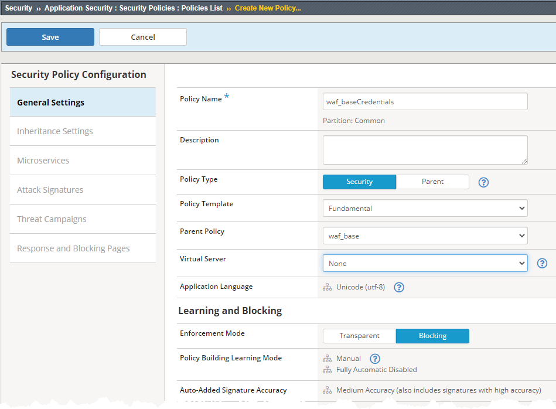
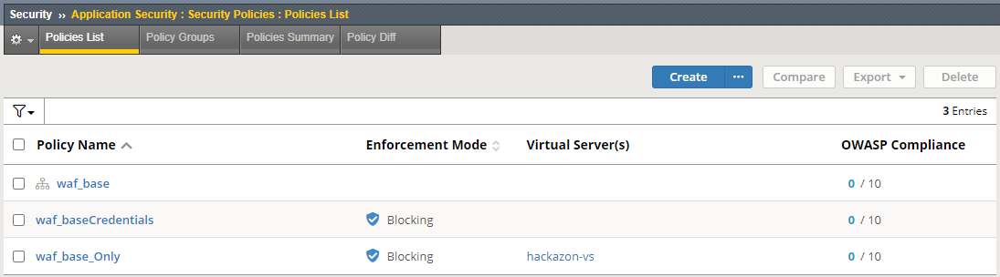
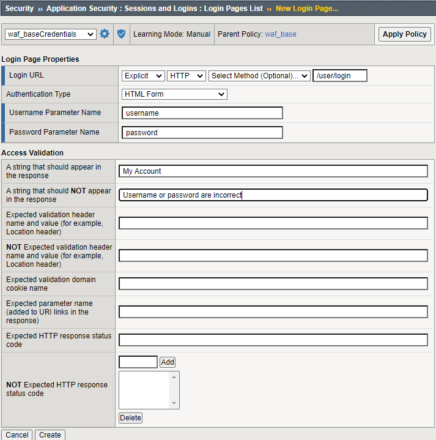
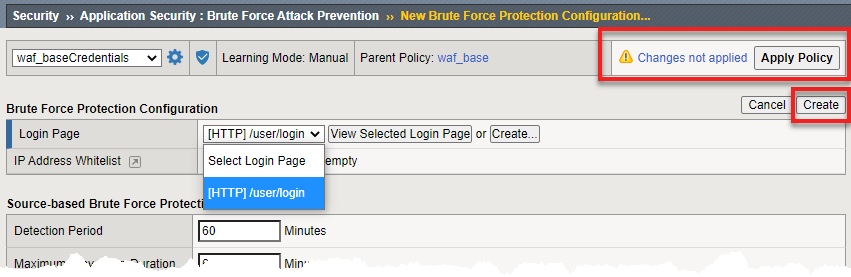
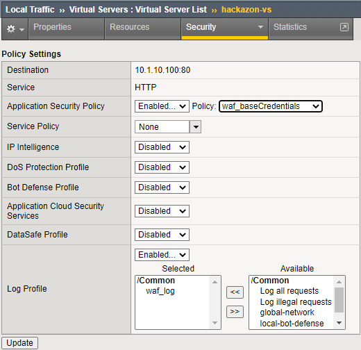

WAF - Identifying the level of protection required for applications Source |
Create Credentials Protection WAF Child Policy¶
Currently are policy is simply the original parent policy waf_base. Which can be applied to all our application requiring basic application security. Now we will customize the policy protecting the Hackazon application to protect the login page and create a true child policy. The child policy will still inherit any changes to the parent policy.
Task 1 - Simulate credential attacks.
Open browser and go to http://<f5student#-ext-pip0>/user/login
For Username enter f5student
For Password. enter random incorrect password. Repeat 5 consecutive times using different password to simulate brute force attack
Note
This is a common brute force attack. In this case the application allowed repeated attempts without lockout. Some applications will send "account locked" for a period of time, however user can continue to repeated attempts to elongate lockout period.
Open new incognito browser and open developer tools. (In Chromium for example: More Tools -> Developer Tools or right click on the page and select Inspect)
Browse to http://<f5student#-ext-pip0>/user/login and login with username f5student and password password
Once successfully logged in, review log on Developer Tool.
- Select Network tab
- Highlight login?return_url=
- On right panel click Headers and scroll to bottom of Form Data to view Username and Password.
{kind=link}
The username and password are plain text when the user enters them into the browser, even in HTTPS applications they are not encrypted until the session layer when SSL/TLS encrypts the data stream. This means the credentials can be obtained by malware in several different ways.
In the next couple of tasks you will help mitigate brute force attacks against the Hackazon application and protect the users credentials as they enter them into the browser.
Task 2 - Create new waf policy to mitigate the vulnerabilities using info on table below:
| Policy Name | waf_baseCredentials |
| Policy Type | Security |
| Parent Policy | waf_base |
| Virtual Server | none |
| Enforcement Mode | Blocking |
Select the Security -> Application Security -> Security Policies -> Policies List page
Click Create New Policy and enter info as shown in image below.
Click Save

{kind=link}
{kind=link}
Task 3 - Configure Brute Force Protection
Here you will set up brute force protection on the login page you were simulating an attack against earlier. If you hit the Sign In button on the main page, you would have seen another way to log in. In a production environment different login page would have to be set up to be protected.
Select Security -> Application Security -> Sessions and Logins -> Login Pages List page
Click Create
Fill in the details as in the image above and click on Create
Select Security -> Application Security -> Anomaly Detection -> Brute Force Attack Prevention then click Create
Change Login Page drop down box to [HTTPS]/user/login then click Create
Click Apply Policy then OK to commit changes

{kind=link}
{kind=link}
Task 4 - Assign policies to protect Hackazon App
Select Local Traffic -> Virtual Servers -> Virtual Servers List and click on hackazon_vs
Select Security then Policy tab
Change Application Security Policy to waf_baseCredentials
Enable Anti-Fraud Profile and select protect_credentials
Click Update

{kind=link}
Task 5 - Repeat simulated credential attacks
- Open browser and go to http://<f5student#-ext-pip0>/user/login
- For Username enter f5student
- For Password enter random incorrect password. Repeat multiple times using different password to simulate brute force attack. You should receive a Captcha challenge after 3-5 failed attempts.
- Enter captcha challenge then enter correct credentials to login in successfully
- On the BIG-IP go to Security -> Event Logs -> Application -> Brute Force Attacks to view the what the BIG-IP logged.